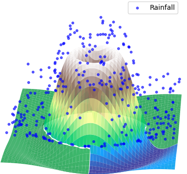

WATRES in practice: A brief overview#
Typical File Structure for WATRES#
your_personal_folder/
├── WATRES/
│ ├── dataset.py
│ ├── WATRES.py
│ └── results.py
├── data/
│ └── mysite/
│ ├── data/
│ │ └── mysite.txt
│ └── save/
│ ├── save_myexperiment_WATRES.pth.tar
│ └── results_myexperiment_WATRES.pkl
├── scripts/
│ ├── train_models.py
│ └── compute_results.py
Folder Structure for Using the WATRES Package#
To properly use the WATRES package, you should have a folder for each site with the following structure:
In the
datafolder, you should have a folder named{mysite}.Inside this folder, you should have two subfolders:
``data/``: This subfolder should store the data file named
{mysite}.txt.For simulated data:
If the true transit time distributions have been computed, you can save them in this data folder.
``save/``: This subfolder will store:
the trained models:
save_myexperiment_WATRES.pth.tarthe results on training/test data of this model:
results_myexperiment_WATRES.pkl. This file contains various statistics on the results of a trained model, created when running the scriptcompute_results.py.
The “data” folder, which contains the data and models for the various synthetic watersheds analyzed in our paper, can be downloaded from Zenodo (refer to the DOI provided in the paper).#
